A Propos de Chet Faker
Nick Murphy anciennement connu sous le nom de Chet Faker (de son vrai nom Nicholas James Murphy), né le 23 juin 1988, est un musicien australien originaire de Melbourne.
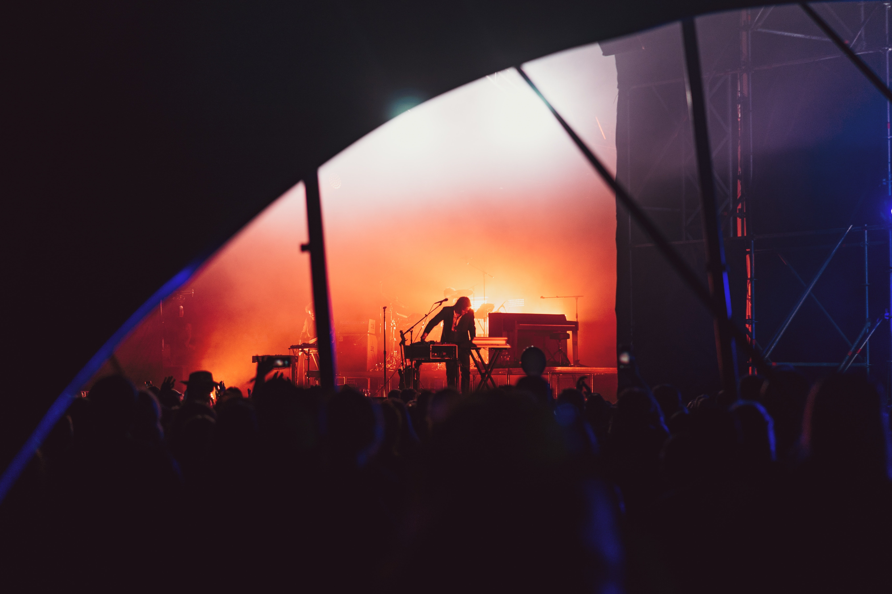
En 2012, il signe sur le label américain Downtown Records et en sort un EP, Thinking in Textures. En octobre de la même année, il remporte un Australian Independent Record Award (AIR) dans la catégorie "Meilleur nouvel artiste" et Thinking in Textures remporte le prix du meilleure single/EP indépendant3. En janvier 2013, ce même EP remporte le prix de la meilleure sortie indépendante aux Rolling Stone Australia Awards. En 2013, sa reprise de la chanson No Diggity de Blackstreet est utilisée pour une publicité de la marque Beck's durant le Super Bowl5. En avril 2014, Built on Glass, le premier album de Chet Faker, reçoit des critiques globalement positives et se hisse en première position des charts australiens.
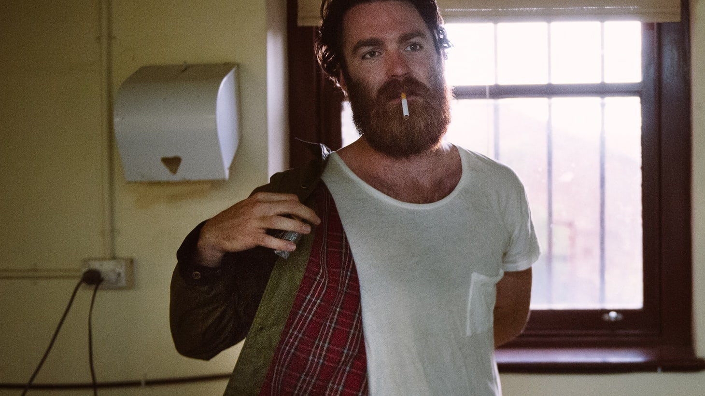
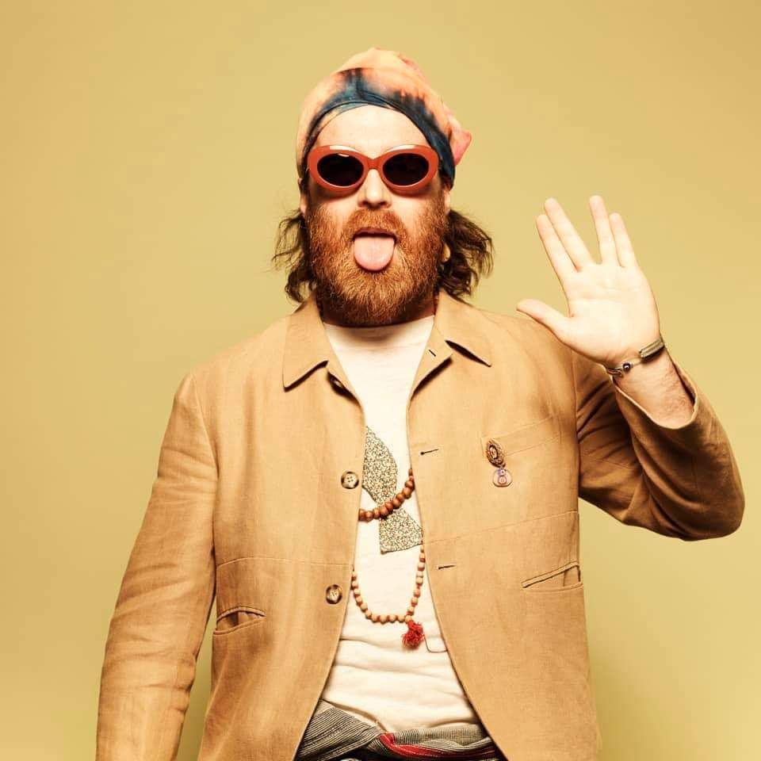
Le top 5 de ses sons
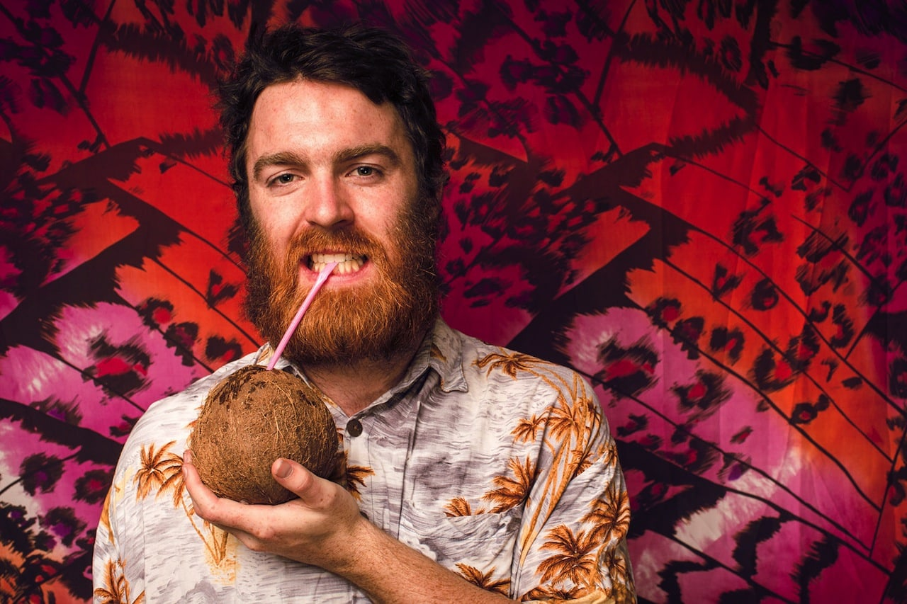
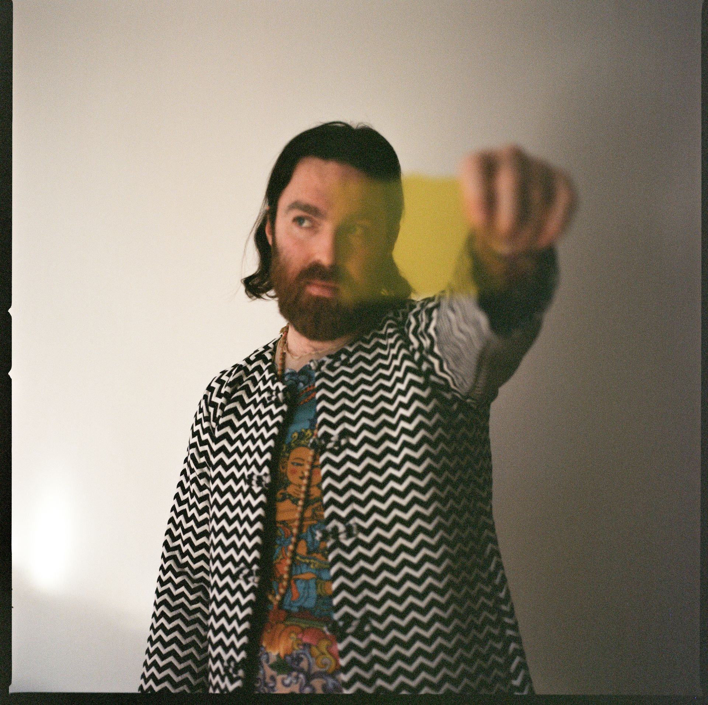
Voir les autres artistes
JamesBlake
A Propos de James Blake
James Blake, né James Litherland le 26 septembre 1988 à Londres, est un auteur-compositeur-interprète, multi-instrumentiste et producteur britannique.
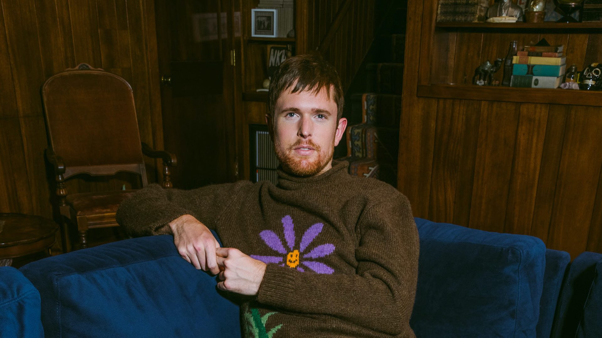
Au cours de sa carrière, il a contribué au travail de production d'artistes tels que Kendrick Lamar, Beyoncé, Jay-Z, Rosalía, Frank Ocean ou Travis Scott1. Il a remporté un Mercury Prize après deux nominations, un Grammy Award après cinq nominations, et a été nommé à trois reprises aux Brit Awards2.
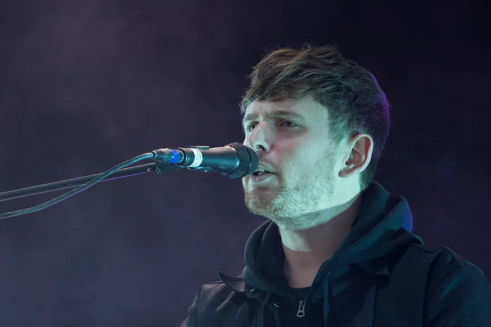
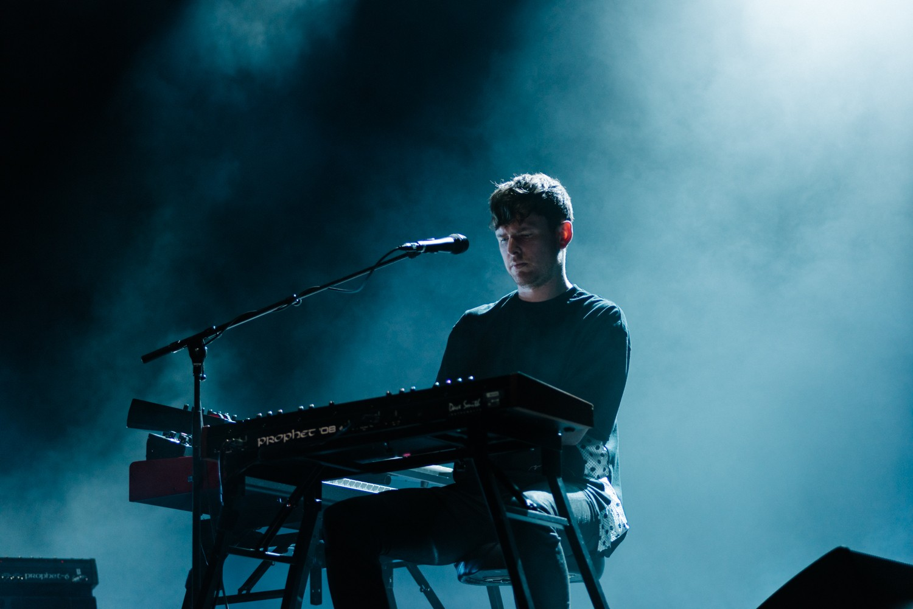
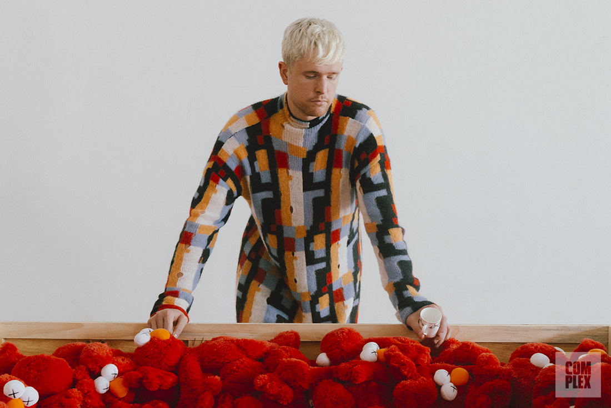
Voir les autres artistes
JorjaSmith
A Propos de Jorja Smith
Jorja Smith, née le 11 juin 1997 à Walsall (Royaume-Uni), est une auteure-compositrice-interprète britannique. Le 17 novembre 2016, elle sort son premier extended play intitulé Project 11.
Son deuxième EP, Spotify Singles, sort quant à lui le 13 décembre 2017. Le 8 juin 2018, Jorja Smith dévoile son premier album studio appelé Lost & Found. Enfin, le 14 mai 2021, sort son troisième EP intitulé Be Right Back. Elle a collaboré avec plusieurs artistes de renom, notamment Drake, Kendrick Lamar, Kali Uchis, Stormzy ou encore Burna Boy.

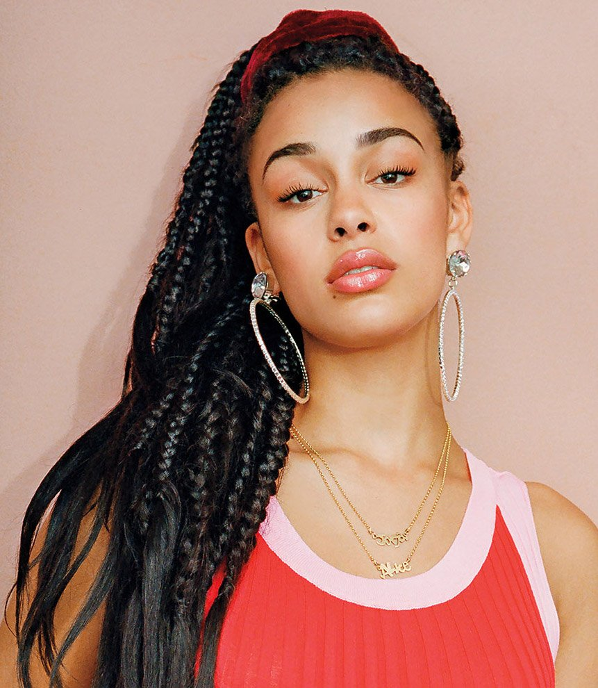
Voir les autres artistes
RyX
A Propos de Ry X
Ry Cuming, né en 1988, mieux connu sous son nom de scène RY X, est un auteur-compositeur-interprète, musicien, producteur de musique et arrangeur australien. Il est le premier artiste à avoir signé sur le label suédois Dumont Dumont.
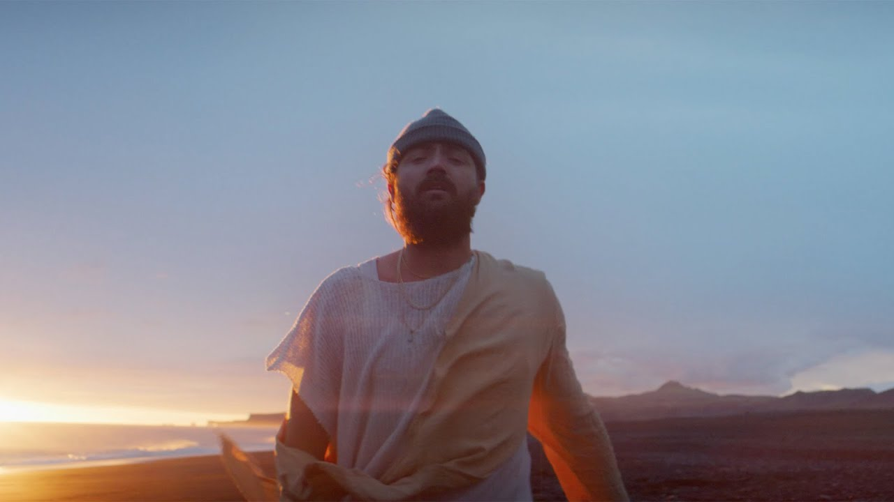
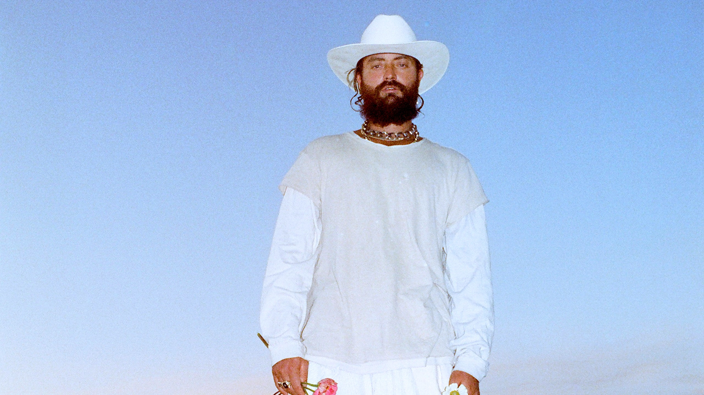
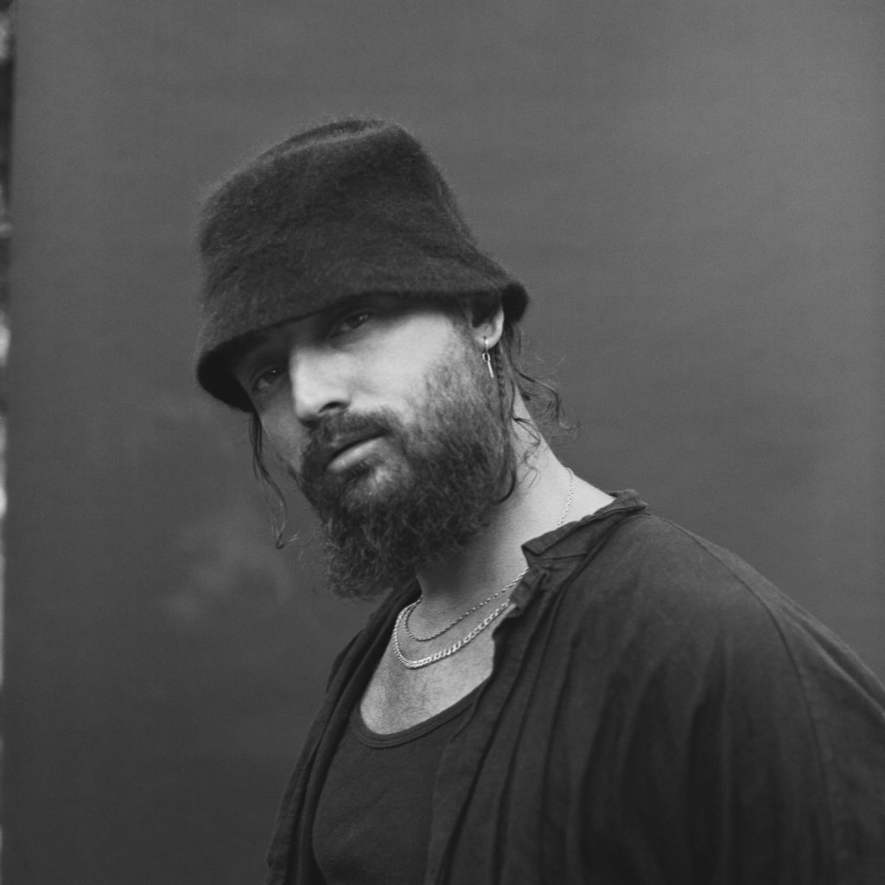
Le top 5 de ses sons
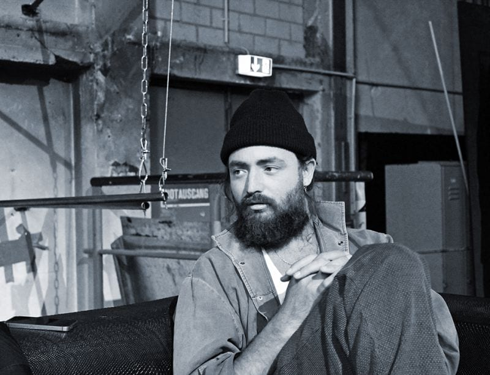